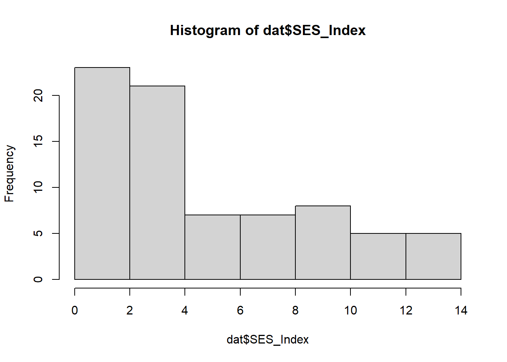

| Characteristic | 0 N = 371 |
1 N = 391 |
p-value2 |
|---|---|---|---|
| age | 26 (18, 35) | 25 (18, 39) | 0.4 |
| active_labor_duration_min | 100 (0, 325) | 843 (375, 1,316) | <0.001 |
| BMI_late | 32 (22, 47) | 36 (21, 55) | 0.034 |
| SES_Index | 6 (1, 14) | 5 (1, 14) | 0.4 |
| gravidity | 0.2 | ||
| 1 | 7 (19%) | 13 (33%) | |
| 2 | 12 (32%) | 12 (31%) | |
| 3 | 5 (14%) | 9 (23%) | |
| 4 | 7 (19%) | 1 (2.6%) | |
| 5 | 4 (11%) | 2 (5.1%) | |
| 6 | 1 (2.7%) | 1 (2.6%) | |
| 7 | 1 (2.7%) | 1 (2.6%) | |
| parity | 0.6 | ||
| 0 | 14 (38%) | 17 (44%) | |
| 1 | 15 (41%) | 13 (33%) | |
| 2 | 6 (16%) | 4 (10%) | |
| 3 | 2 (5.4%) | 5 (13%) | |
| NEFA__Acetate | 0.06 (-3.56, 2.48) | 0.07 (-2.03, 2.03) | >0.9 |
| NEFA__Butyrate | -0.01 (-1.33, 5.94) | 0.05 (-1.06, 1.88) | 0.8 |
| NEFA__Iso.Valerate | -0.10 (-1.88, 2.06) | -0.02 (-2.31, 2.21) | 0.7 |
| NEFA__Iso.Caprate | 0.24 (-1.64, 3.98) | -0.04 (-1.21, 2.16) | 0.2 |
| NEFA__Formate | 0.33 (-2.00, 1.88) | -0.15 (-2.98, 1.57) | 0.017 |
| NEFA__Propionate | -0.04 (-1.38, 2.78) | 0.08 (-1.89, 3.55) | 0.6 |
| NEFA__Stearic | -0.19 (-3.32, 1.52) | 0.14 (-1.81, 1.76) | 0.2 |
| NEFA__Hexanoic | 0.11 (-1.44, 1.53) | 0.19 (-1.67, 6.93) | 0.7 |
| NEFA__Arachidonic | -0.05 (-3.16, 1.42) | 0.01 (-2.07, 1.93) | 0.8 |
| 1 Mean (Min, Max); n (%) | |||
| 2 Welch Two Sample t-test; Pearson’s Chi-squared test | |||
Final Quarto Report
This dataset was used to compare non-esterified fatty acids (NEFA) in pregnan twomen with dystocia. NEFA levels can be used to measure the rate of lipolysis which is the breakdown of adipose tissue. The levels can help determine metabolic stress occurring during labor.
Table 1: Descriptive Statistic Table
| Characteristic | OR | 95% CI | p-value |
|---|---|---|---|
| age | 0.95 | 0.85, 1.06 | 0.4 |
| gravidity | 0.45 | 0.24, 0.78 | 0.008 |
| parity | 3.20 | 1.31, 8.87 | 0.016 |
| Abbreviations: CI = Confidence Interval, OR = Odds Ratio | |||
Table 2: Logistic Regression Table

From the dataset, the total of participants were 76 and mean age was 25.5657895.
The data shows that the mean SES Index of participants with no case of dsytocia was 6 (1, 14) and the mean SES Index of participants with dsytocia was 5 (1, 14).
| Characteristic | Beta | 95% CI | p-value |
|---|---|---|---|
| (Intercept) | 372 | -204, 947 | 0.2 |
| age | 4.3 | -18, 26 | 0.7 |
| Abbreviation: CI = Confidence Interval | |||
Using a linear regression model, the relationship between age and active labor duration was analyzed and the results are 4.3 (95% CI -18, 26; p=0.7).